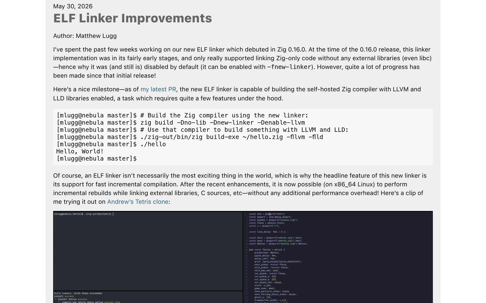

Y
Hacker News — Top 50
All history
Today
50 stories
Weeks
#1
Open site ↗
Cloudflare Turnstile requiring fingerprintable WebGL
651 ▲
💬 353
by HypnoticOcelot
💬 Discuss on HN
#2
Open site ↗
Codex just found a "workaround" of not having sudo on my PC
529 ▲
💬 244
by thunderbong
💬 Discuss on HN
#3
Open site ↗
Creatine raises brain energy levels and slows cognitive decline: study
513 ▲
💬 337
by MrJagil
💬 Discuss on HN
#4
Open site ↗
Dav2d
470 ▲
💬 171
by captain_bender
💬 Discuss on HN
#5
Open site ↗
1-Bit Bonsai Image 4B Image Generation for Local Devices
380 ▲
💬 141
by modinfo
💬 Discuss on HN
#6
Open site ↗
The solution might be cancelling my AI subscription
357 ▲
💬 227
by dmw_ng
💬 Discuss on HN
#7
Open site ↗
United Airlines 767 returns to Newark after Bluetooth name sparks alert
343 ▲
💬 642
by Eridanus2
💬 Discuss on HN
#8
Open site ↗
I put a datacenter GPU in my gaming PC
302 ▲
💬 170
by birdculture
💬 Discuss on HN
#9
Open site ↗
Chuwi Minibook X
254 ▲
💬 184
by thcipriani
💬 Discuss on HN
#10
Open site ↗
Restartable Sequences
218 ▲
💬 52
by grappler
💬 Discuss on HN
#11
Open site ↗
Meta launches Instagram, Facebook, and WhatsApp subscriptions
212 ▲
💬 325
by tambourine_man
💬 Discuss on HN
#12
Open site ↗
Deflock hits 100k ALPRs Mapped in USA
210 ▲
💬 61
by pilingual
💬 Discuss on HN
#13
Open site ↗
ChatGPT for Google Sheets exfiltrates workbooks
204 ▲
💬 57
by hackerBanana
💬 Discuss on HN
#14

Open site ↗
'Backrooms' Stuns with $81M Debut
196 ▲
💬 124
by mindcrime
💬 Discuss on HN
#15
Open site ↗
Atherton spent $145K to delay train electrification. The rest of us paid $400M
193 ▲
💬 91
by mslate
💬 Discuss on HN
#16
Open site ↗
Backpressure is all you need
186 ▲
💬 102
by lucasfcosta
💬 Discuss on HN
#17
Open site ↗
Odysseus – self-hosted AI workspace
170 ▲
💬 80
by Dzheky
💬 Discuss on HN
#18
Open site ↗
The Speed of Prototyping in the Age of AI
159 ▲
💬 81
by mooreds
💬 Discuss on HN
#19
Open site ↗
Daily pill can double survival time for deadliest cancer, trial shows
158 ▲
💬 48
by c-oreills
💬 Discuss on HN
#20
Open site ↗
It's Not Just X. It's Y
155 ▲
💬 126
by mooreds
💬 Discuss on HN
#21
Open site ↗
US healthcare still stupidly expensive, with pathetic outcomes, study finds
140 ▲
💬 161
by rbanffy
💬 Discuss on HN
#22
Open site ↗
You weren't meant to have a boss (2008)
132 ▲
💬 154
by downbad_
💬 Discuss on HN
#23
Open site ↗
Show HN: Streambed – Stream Postgres to Iceberg on S3, Supports Postgres Wire
101 ▲
💬 26
by vira28
💬 Discuss on HN
#24
Open site ↗
I'm So Tired of Ads
89 ▲
💬 75
by speckx
💬 Discuss on HN
#25
Open site ↗
SICP Video Lectures (1986)
88 ▲
💬 5
by tosh
💬 Discuss on HN
#26
Open site ↗
Re: [PATCH] OOM_pardon, a.k.a. don't kill my xlock (2004)
80 ▲
💬 70
by luu
💬 Discuss on HN
#27
Open site ↗
New solar desalination breakthrough makes fresh water without toxic brine
75 ▲
💬 10
by rmason
💬 Discuss on HN
#28
Open site ↗
The people who actually want AI to replace humanity
75 ▲
💬 84
by plastic-enjoyer
💬 Discuss on HN
#29
Open site ↗
Shift from a leader-follower to a leader-leader approach
70 ▲
💬 37
by Alupis
💬 Discuss on HN
#30
Open site ↗
Nvidia RTX Spark
68 ▲
💬 62
by shenli3514
💬 Discuss on HN
#31
Open site ↗
Sergey Brin told Google staff that working 60 hours a week is the 'sweet spot' (2025)
67 ▲
💬 72
by randycupertino
💬 Discuss on HN
#32
Open site ↗
FROST: Fingerprinting Remotely using OPFS-based SSD Timing [pdf]
62 ▲
💬 16
by simjnd
💬 Discuss on HN
#33
Open site ↗
Show HN: Atomic Editor – Obsidian-style live preview for CodeMirror 6
61 ▲
💬 15
by kenforthewin
💬 Discuss on HN
#34
Open site ↗
Malaysia enforces ban on social media accounts for children younger than 16
60 ▲
💬 31
by 01-_-
💬 Discuss on HN
#35
Open site ↗
The History of "Prisencolinensinainciusol"
51 ▲
💬 17
by NaOH
💬 Discuss on HN
#36
Open site ↗
Steam Deck sells out in North America within 24 hours of price hike
44 ▲
💬 16
by frutiger
💬 Discuss on HN
#37
Open site ↗
Chibil: A C compiler targeting .NET IL
44 ▲
💬 4
by algorithmsRcool
💬 Discuss on HN
#38
Open site ↗
(An ((Even Better) Lisp) Interpreter (In Python))
44 ▲
💬 0
by vismit2000
💬 Discuss on HN
#39
Open site ↗
The dangerous delusion of modern warfare
36 ▲
💬 77
by runeks
💬 Discuss on HN
#40
Open site ↗
Folding Beijing
34 ▲
💬 0
by root-parent
💬 Discuss on HN
#41
Open site ↗
Talk Is Cheap: The Operational Impact of LLM Use
33 ▲
💬 18
by oudlys
💬 Discuss on HN
#42
Open site ↗
Remove all LLM generated commits before people get hurt by this nonsense
30 ▲
💬 7
by shantnutiwari
💬 Discuss on HN
#43
Open site ↗
Unlawful by design: Exposing the human rights costs of generative AI
30 ▲
💬 2
by cratermoon
💬 Discuss on HN
#44
Open site ↗
My wife tried to log 1k phone-free hours but quit. So I vibe-coded an app
29 ▲
💬 4
by GreenDotstudios
💬 Discuss on HN
#45
Open site ↗
Surface Laptop Ultra: Made for World Makers
26 ▲
💬 35
by berlianta
💬 Discuss on HN
#46
Open site ↗
My Accessibility Stack and the Future on Wayland
26 ▲
💬 5
by birdculture
💬 Discuss on HN
#47
Open site ↗
Karpathy LLM Wiki pattern integrated into Obsidian agenic workflow
24 ▲
💬 7
by pssah4
💬 Discuss on HN
#48
Open site ↗
$100 to a Debian Developer who can get Fresh Editor into Trixie
23 ▲
💬 8
by jph
💬 Discuss on HN
#49
Open site ↗
Experimental pill promises new hope for pancreatic cancer
23 ▲
💬 1
by marc__1
💬 Discuss on HN
#50
Open site ↗
With Claude: Less Coding, More Testing
23 ▲
💬 3
by ingve
💬 Discuss on HN